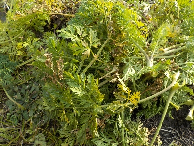
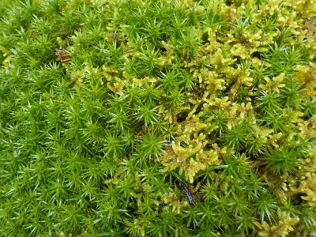
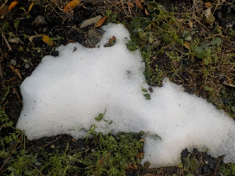

ニンジンの葉は食べた方がいいのかな？。
2025/01/19

再生野菜とかリボベジの情報を見ているとニンジンの葉っぱを食べるってあったんですけど、この葉っぱも食べたほうがいいのかな？
屋内の水耕栽培で育てた柔らかい葉ならいいかもしれないけど、これは固くて苦いですよね。
ニンジンの間引きした小さい葉っぱなら食べるんだけどな。
2025/01/19

再生野菜とかリボベジの情報を見ているとニンジンの葉っぱを食べるってあったんですけど、この葉っぱも食べたほうがいいのかな？
屋内の水耕栽培で育てた柔らかい葉ならいいかもしれないけど、これは固くて苦いですよね。
ニンジンの間引きした小さい葉っぱなら食べるんだけどな。
2025/01/13

寒くてもコケって育つんですね。
生い茂っています。
2025/01/11

日中の気温が少し上がって風もなかったので動きやすかったです。
雪は日陰にちょっと残ってるくらいでした。
過去の日記
畑仕事じゃないよ。